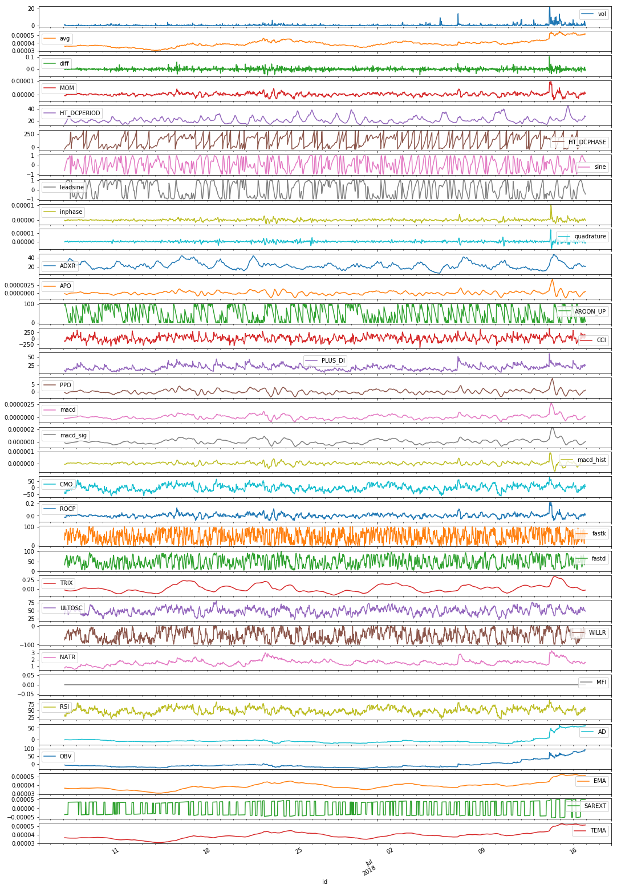

Prelude
上高中的时候，曾经看过一篇Valve开发Half-Life 2的回忆录，非常生动的记录了整个项目从想法产生到产品发布过程中遇到的种种挫折以及最后激动人心的时刻。作为一个软件开发者，在每次建立新的项目的时候，都有一种如同开始了一段崭新的旅程的感觉，那么如果能把开发过程中的点滴记录下来，在项目完成之后回头望去，将会是十分有趣的体验。
于是乎，在上一篇文章阐述了半天用RL搞量化交易的可能性之后，我决定着手实践一下，RLCrypto就是我新开源的代码库，用于将RL真正的应用于实盘交易中，那么本系列文章也就是用来记录我在开发RLCrypto中遇到的问题，解决方案以及一些未能立即实现的想法的。 Alright, let’s rock’n roll!
整体架构
语文老师曾经苦口婆心的教给我们，写作文之前要先构思，要写提纲，要有个全文的骨架。那么开发软件系统同样如此，构思这一步骤甚至远比写作时的构思更重要，因为我们要写的东一西是一篇能运行的作文，如果架构有问题，可想而知会发生什么后果。所以，我们就先来考虑一下如何设计这个系统。
一切从最简单的开始。列出一些本质的问题，并回答他们：
- 我们的系统是做什么用的
- 系统使用的输入数据是什么
- 系统的输出是什么
对于第一个问题，我们已经很明确了，我们的系统是一个自动化交易程序，其中有一个自认为能打败市场的智能体(agent)，智能体管理着一个多种数字货币构成的投资组合，智能体从交易所获取到市场状态(state/data)，作出相应的交易决策/动作(action)，交易决策被转换为能够执行的交易指令/订单(orders)，由系统发出。用符号描述就是这样: exchange->(state/data)->agent->(action)->exchange
对于第二个问题，系统使用的数据是什么，目前我们能够方便获取到的只有OHLCV数据，那么我们就用它来作为输入数据，但是，当然要对数据进行处理，具体的处理过程之后细说。
对于第三个问题，系统的输出是什么，上一篇文章中我们提到过，我们想要构建一个端到端的解决方案，数据进，指令出，那么系统的输出当然也就是交易指令了，那么交易指令是什么形态的？不要着急，我们之后也会细讲。
回答完这几个问题之后，大脑中似乎已经有了一个基本框架，在明确这个框架没有大问题之后，我们就可以尝试着思考一些细节问题了。作为一个近年来一直跟数据打交道的人，我决定先从输入数据入手。
Input Data
在上一段中我们提到了，我们将只使用OHLCV数据对Agent进行训练。在经过调研之后我发现，火币的接口能够获取到的k线数据最多只有2000条，用这么点数据训练Agent难道不会过拟合？我觉得肯定会，但是再构建一套迁移学习的解决方案短期之内实现又不太现实怎么办？那就先有啥用啥吧。
数据来源，数据长度确定了，下一步就来说说如何处理数据，使之能够更有效地被agent使用。首先，我们应该知道的常识是，神经网络的输入数据需要尽量服从正态分布，那么直接将OHLCV数据塞进去是很不明智的，所以我们需要对数据做预处理。最Intuitive的方法是做一阶差分，但是这样出来的结果仍然不能保证正态性，同时数据的方差也不易控制。那么更高级的方法是使用OHLCV数据计算一些指标，选择符合正太分布的指标作为feature。
但是选取什么样的指标合适，以及如何计算这些指标呢？这篇博客以及ta-lib库或许能给出答案。在经过一系列筛选之后，我选出了34个相对合格的feature，当然其中也包含了趋势特征，这样的特征会在之后做normalize的时候保证值域的正常。下面给出了生成feature的代码：1
2
3
4
5
6
7
8
9
10
11
12
13
14
15
16
17
18
19
20
21
22
23
24
25
26
27
28
29
30
31
32
33
34
35
36def generate_tech_data_default(stock, open_name, close_name, high_name, low_name, volume_name='vol'):
open_price = stock[open_name].values
close_price = stock[close_name].values
low_price = stock[low_name].values
high_price = stock[high_name].values
volume = stock[volume_name].values
data = stock.copy()
data['MOM'] = talib.MOM(close_price)
data['HT_DCPERIOD'] = talib.HT_DCPERIOD(close_price)
data['HT_DCPHASE'] = talib.HT_DCPHASE(close_price)
data['sine'], data['leadsine'] = talib.HT_SINE(close_price)
data['inphase'], data['quadrature'] = talib.HT_PHASOR(close_price)
data['ADXR'] = talib.ADXR(high_price, low_price, close_price)
data['APO'] = talib.APO(close_price)
data['AROON_UP'], _ = talib.AROON(high_price, low_price)
data['CCI'] = talib.CCI(high_price, low_price, close_price)
data['PLUS_DI'] = talib.PLUS_DI(high_price, low_price, close_price)
data['PPO'] = talib.PPO(close_price)
data['macd'], data['macd_sig'], data['macd_hist'] = talib.MACD(close_price)
data['CMO'] = talib.CMO(close_price)
data['ROCP'] = talib.ROCP(close_price)
data['fastk'], data['fastd'] = talib.STOCHF(high_price, low_price, close_price)
data['TRIX'] = talib.TRIX(close_price)
data['ULTOSC'] = talib.ULTOSC(high_price, low_price, close_price)
data['WILLR'] = talib.WILLR(high_price, low_price, close_price)
data['NATR'] = talib.NATR(high_price, low_price, close_price)
data['MFI'] = talib.MFI(high_price, low_price, close_price, volume)
data['RSI'] = talib.RSI(close_price)
data['AD'] = talib.AD(high_price, low_price, close_price, volume)
data['OBV'] = talib.OBV(close_price, volume)
data['EMA'] = talib.EMA(close_price)
data['SAREXT'] = talib.SAREXT(high_price, low_price)
data['TEMA'] = talib.EMA(close_price)
data = data.drop([open_name, close_name, high_name, low_name, 'amount', 'count'], axis=1)
data = data.dropna().astype(np.float32)
return data
那么获取火币数据的代码就十分简单了，直接对HuobiService中提供的1
2
3
4
5
6
7
8
9
10
11
12
13
14
15
16
```python
def kline(asset, base_currency='btc', interval='60min', count=2000):
s = get_kline('{0}{1}'.format(asset, base_currency), interval, count)
if s is None: return None
s = s['data']
s = pd.DataFrame(s)[::-1]
if s.shape[0] < count:
return None
s.index = pd.DatetimeIndex(s['id'].apply(lambda x: datetime.datetime.utcfromtimestamp(x) + datetime.timedelta(hours=8)))
s = s.drop('id', axis=1)
s['avg'] = (np.mean(s[['open', 'high', 'low', 'close']], axis=1))
s['diff'] = np.log(s['close'] / s['close'].shift(1)).fillna(0)
return s
def klines(assets, base_currency='btc', interval='60min', count=2000):
return lfilter(lambda x: x[1] is not None, lmap(lambda x: (x, kline(x, base_currency=base_currency, interval=interval, count=count)), assets))
有了这两段代码之后，就可以构造出我们的输入数据了。数据可视化的结果

OK,那么这篇文章我们就讲到输入数据的处理，现在要去赶工毕业论文了，下一篇将会讲Agent的构建